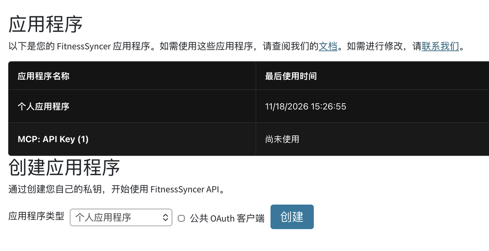

把中国区的运动记录导出，再送进 FitnessSyncer 转到国际区
每条记录导出颂拓服务器上的原始 .fit 文件，并生成一份「导出清单.csv」。中途关掉再开，已下好的会跳过。
两串都来自你自己在 FitnessSyncer 开发者页面创建的那个「个人应用程序」：点「创建」后就能看到并复制，不需要点「旋转访问键」。它们和令牌都只存在这台电脑上。
第一次用要先「登录颂拓国际」：弹出的窗口里用颂拓国际账号登录并同意；还没有这个账号，就在同一个窗口里注册一个，再回来点上传。之后每次点一下，FitnessSyncer 就把它那边的运动记录送进那个账号，关掉这个窗口也不影响。
三个选项卡就是这三步，按顺序做。第一次用大约十几分钟，之后每次只要点两下。
